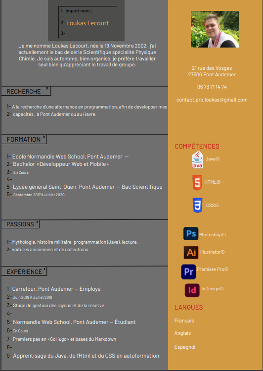
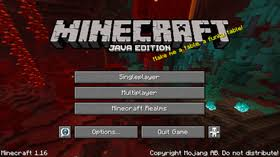

A l'origine, le CV que j'ai fait devais etre fait sur la suite Adobe, donc soit par Illustrator soit par Indesign, mais malgres cette consigne, j'ai fait mon CV en Html Css. De base je souhaité faire un CV sous forme de page de programmation, pour ce faire j'avais pris exemple sur 'EclispeIDEA' une application de programmation spécialisé pour le langage de programmation 'Java'

(Ma photo est flou pour aucune raison)
Et oui mon CV à bien changé, mais je l'apprécie toujour autant aujourd'hui. Par la suite on m'a demandé de FORTEMENT le modifier ce que j'ai fait et, est venue le CV actuelle. A l'origine, les couleurs n'était pas définitif, mais par le temps j'ai commencé à vouloir laisser le gris et j'ai changé le rouge en rouge plus foncer. ET PAF SA FAIT DES CHOCAPICS !!! Hum hum, et voilà comment est apparue mon CV actuelle.
Tout d'abord, Minecraft c'est quoi ? C'est un jeu vidéo de type « bac à sable » (construction complètement libre) développé par le Suédois Markus Persson, alias Notch, puis par la société Mojang Studios. Il s'agit d'un univers composé de cube et généré aléatoirement, qui intègre un système d'artisanat axé sur l'exploitation puis la transformation de ressources naturelles (minéralogiques, fossiles, animales et végétales). J'ai commencé a y joué en 2014, l'hors de la sortie de la version 1.14 nommé la "Village et Pillage update", en solo au début pour ensuite j'ai accédé à un serveur privé nommé 'Nyroma', le serveur d'un ami, qui initaillement était en mode "onli-earth", un monde classic, mais qui par la suite, l'hors de la 1.15, a était reset pour devenir un mode "Skyblock", un monde dans le ciel avec le vide en dessous. Et pour survivre dans une map Skyblock, un plugin est fortement conseiller, de ce fait l'administrateur du serveur a codé un plugins pour nous facillité la survie. Le plugin est disponible sur GitHub.

L'objectif de mon plugin est de facilité le jeux ainsi qu'avoir accées à un grand nombres d'objet inaccessible, le tout dans les petites zones. Seul les craft sont, en grande partie, fini, j'aimerai par la suite faire des métiers. Dans les métiers prévue pour l'instant il y a le 'Farmer', le 'Miner', le 'Hunter', le 'Pécheur', l' 'Enchanteur', le 'Chimiste' et possiblement d'autre.